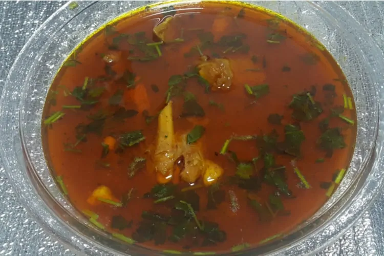

Paya literally translates to trotters and this warming goat curry, with a soup-like consistency, is often eaten on cold winter mornings. Again, slow-cooking it will ensure that all the spices have infused into the perfectly tender meat Paaye is another slow-cooking delight from Pakistani cuisine. Some basic ingredients like onion, curry, and spices are allowed to cook for several hours and often overnight.
